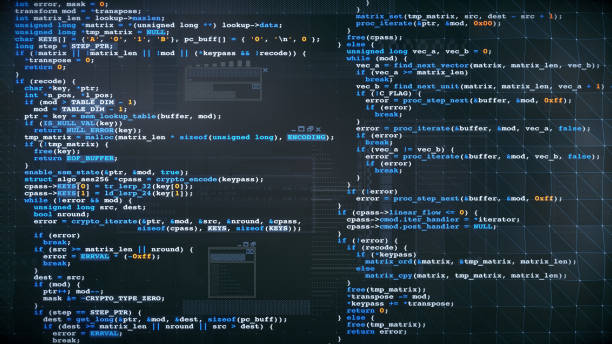

About me
I am a full-stack web developer,I am a passionate programmer and system developer.Nevertheless,I am a competent linux Kernel maintainer.Transitioning between user-space web development and low-level Linux kernel maintenance requires a massive mental shift. You are bridging the gap from rapid, abstracted scripting languages and frameworks to strictly governed, memory-safe C programming where every hardware-level cycle and pointer dereference counts. The Dual-World PerspectiveAs someone who touches both the frontend/backend of the web stack and the hardware-software boundary, you operate in two distinct paradigms:Web Development: Focuses on scalability, user experience, rapid deployments (CI/CD pipelines), and high-level abstractions like HTTP, DOM, and event loops.Kernel Maintenance: Focuses on hardware interaction, memory management, process scheduling, and security. There is no standard library (libc) to fall back on, and you are writing code that cannot afford segmentation faults. The Maintainer's WorkflowBeing a Linux kernel maintainer means you are less of a traditional coder and more of an editor and gatekeeper. Your primary duties include:Patch Review: Critiquing submissions from thousands of developers, checking for proper format, coding style, and security regressions. Testing & Trees: Managing your specific subsystem tree (e.g., in linux-next), pushing code into branches, and ensuring it interacts well with testing bots.Mailing Lists: Engaging with the community via lore.kernel.org, handling plain-text patches, and utilizing tools like b4 for streamlined submissions. Merge Window: Submitting pending changes to Linus Torvalds during the time-based release window, followed by seven weeks of bug-fix cycles.Leveraging Your Web Skills in the KernelWhile C is the primary language, your web background is highly advantageous for modern kernel maintenance:Asynchronous Mindset: Web developers are masters of asynchronous event-driven code. This translates well into understanding kernel bottom halves, interrupts, and tasklets.API Architecture: Designing clean, scalable web APIs translates to understanding robust kernel subsystem abstractions (e.g., the Direct Rendering Manager or V4L2 frameworks). Tooling: You are uniquely positioned to build or maintain web-based dashboard tooling used by the kernel community to track patches and build test results, such as Patchwork and CI testing automation. Recommended Resources & ToolingPatchwork: Many subsystems use Patchwork instances to track the state of patch series and automate feedback.Maintainer Handbook: Reference the official Kernel Maintainer Handbook for guidelines on rebasing, merging, and pull requests.Could you tell me what specific subsystem you currently maintain or want to contribute to, and which programming languages you primarily use in your web projects? This will help me give you more tailored architectural patterns that bridge the gap between your web and kernel work.

My projects
project 1:The calculator app.
A calculator app is a versatile digital tool used for performing mathematical equations.
It spans from basic arithmetic and scientific computations to unit conversions and advanced graphing,
with versions available for mobile devices, desktops, and web browsers.
project 2:The business meeting app.
A business meeting app is a digital workspace designed for corporate communication, allowing users to host video conferences, audio calls, and team chats. It streamlines collaboration for remote and hybrid teams by combining scheduling, document sharing, and real-time interaction into a single platform. These applications are packed with features to replicate or improve the in-person meeting experience:🌟 Core FeaturesHD Video & Audio: High-quality, lag-free communication with advanced background noise suppression. Screen & File Sharing: Ability to present slides, share applications, or hand over control to collaborate on documents simultaneously.Interactive Tools: Built-in virtual whiteboards, in-meeting chat, and live polling/Q&A for engagement. Recording & Transcription: Cloud recording of sessions and AI-generated text transcripts for people who miss the meeting or need a reference later.Breakout Rooms: Functionality to split a large meeting into smaller, simultaneous groups for focused discussions. 🏢 Leading Industry SolutionsZoom Workplace: A highly reliable, all-in-one platform known for intuitive ease-of-use and AI integration. Microsoft Teams: Deep integration with Microsoft Office apps, making it a staple for document-heavy enterprises.Google Meet: Seamlessly syncs with Google Calendar and Gmail for quick, browser-based access. RingCentral: Combines video meetings with business phone systems and team messaging. If you are currently looking for the right software, tell me:How many participants usually attend your meetings?What other tools/software does your company already use (e.g., Microsoft 365, Google Workspace)?Do you need features like webinars or advanced AI note-taking? I can recommend the exact platform that best fits your needs.

project 3:Online shop.
Your website functions as a 24/7 digital storefront, allowing global customers to seamlessly browse your catalog, learn about your offerings, and securely purchase from anywhere. It combines automated backend inventory tracking, a frictionless checkout experience, and curated product storytelling to turn casual browsers into paying customers. An optimized e-commerce website generally includes the following core components to drive engagement and sales:Digital Catalog & Storytelling: Instead of physical displays, high-quality imagery and targeted descriptions highlight the benefits, value, and backstory of each product. Seamless Navigation: Categorized layouts and powerful search filters help shoppers quickly find specific items or long-tail keywords.Frictionless Checkout: Built-in shopping carts and secure payment gateways (like M-Pesa or Stripe) make buying fast and trustworthy.Customer Accounts: Personalized dashboards allow returning buyers to track orders, manage addresses, and view purchase history. Trust Elements: Social proof such as customer reviews and star ratings help build brand confidence for new visitors.
Contact me
ENTERTAINMENT
Tales of the crazy KENNAR